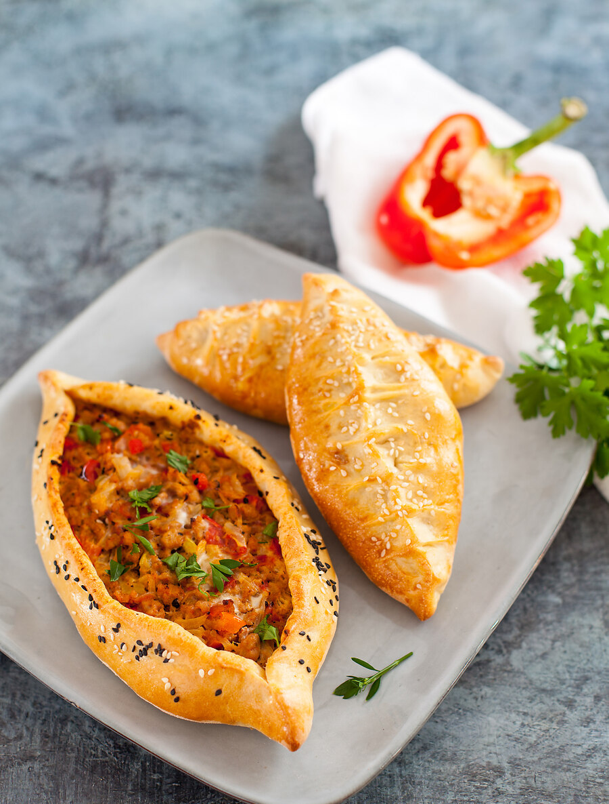

На самом деле это универсальное тесто — оно подходит как для закрытых пирожков, так и открытых пирогов в форме лодочек, и круглых в стиле пиццы. На этом тесте я готовлю и хачапури по-аджарски, и турецкие лодочки пиде. Из этого же теста можно приготовить и обычные булочки. Просто замесите двойную порцию теста (можете половину оставить на ночную расстойку и испечь булочки на следующий день).
Из указанного объема получится 8 закрытых пирожков или 4 открытые лодочки.
для теста:
для начинки: